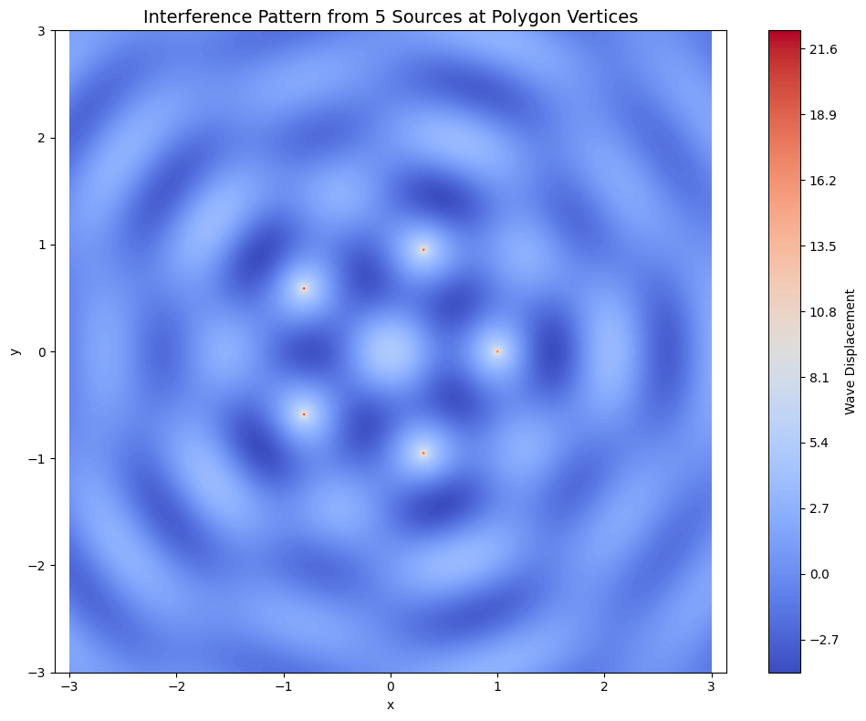

Problem 1
# Interference Patterns on a Water Surface
Introduction
Wave phenomena are among the most fundamental and visually captivating aspects of physics. They appear in many forms, from ripples on a pond to sound waves in the air, electromagnetic waves in space, and even probability waves in quantum mechanics. One of the most fascinating and important behaviors of waves is interference—the phenomenon where two or more waves overlap and combine to form a new wave pattern.
This report explores wave interference patterns on a water surface using a computational approach. By simulating point sources arranged at the vertices of a regular polygon, we analyze the resulting wave superposition to visualize and interpret the interference phenomena. The goal is to understand how symmetry, wave coherence, and spatial arrangement affect the resultant wave field.
Motivation
Understanding interference not only helps in grasping fundamental wave behavior but also provides insight into real-world technologies and natural systems. Interference plays a key role in:
- Optics: Diffraction gratings, anti-reflective coatings, holography.
- Acoustics: Sound engineering, noise-cancellation technologies.
- Quantum Physics: Double-slit experiments, quantum interference.
- Water Engineering: Harbor design, wave energy devices.
Observing wave interactions on a water surface gives an intuitive visualization of how multiple sources influence each other. The task provides an educational and computational framework for studying constructive interference (amplification) and destructive interference (cancellation).
Theoretical Framework
A. Circular Wave Equation
The disturbance created by a single point source on a 2D water surface can be described by a circular wave function:
\(\eta(x, y, t) = \frac{A}{\sqrt{r}} \cos(kr - \omega t + \phi)\)
Where:
- \(\eta(x, y, t)\): Water surface displacement at position \((x, y)\) and time \(t\)
- \(A\): Amplitude of the wave
- \(r = \sqrt{(x - x_0)^2 + (y - y_0)^2}\): Radial distance from the source at \((x_0, y_0)\)
- \(k = \frac{2\pi}{\lambda}\): Wave number, related to the wavelength \(\lambda\)
- \(\omega = 2\pi f\): Angular frequency, with \(f\) being the frequency
- \(\phi\): Phase shift (set to zero in our simulation for coherence)
B. Superposition Principle
When multiple such waves overlap, their effects add linearly at each point due to the principle of superposition:
\(\eta_{\text{sum}}(x, y, t) = \sum_{i=1}^{N} \eta_i(x, y, t)\)
Where \(N\) is the number of sources. Each \(\eta_i\) is calculated using the same wave function but from a different origin.
Experimental Design
Step 1: Select a Polygon
To study the effects of symmetry, a regular polygon is chosen. Examples include:
- Triangle (3 sides)
- Square (4 sides)
- Pentagon (5 sides)
- Hexagon (6 sides)
- Octagon (8 sides)
For this analysis, we selected a regular pentagon, which introduces rich symmetry and complexity in interference patterns.
Step 2: Place the Sources
Each wave source is placed at a vertex of the polygon. The coordinates of the vertices on the unit circle are calculated as:
\((x_i, y_i) = \left(R \cos\left(\frac{2\pi i}{N}\right), R \sin\left(\frac{2\pi i}{N}\right)\right), \quad i = 0, 1, ..., N-1\)
Where \(R\) is the radius of the circle (typically set to 1).
Step 3: Compute the Wave Field (Expanded)
Once the wave sources are positioned at the vertices of a regular polygon, the next step is to compute the resulting wave field across a defined 2D spatial domain. This involves discretizing the space into a grid and calculating the cumulative wave interference at each point due to all the sources.
Grid Definition
To analyze the spatial behavior of the waves, we create a rectangular grid in the \((x, y)\) plane. This grid represents discrete sampling points over a continuous water surface and is typically centered at the origin. The resolution (number of grid points) and extent (how far in space it spreads) are chosen based on the wavelength and number of sources.
Mathematically:
- Let \(x \in [-L, L]\), and \(y \in [-L, L]\), where \(L\) is the half-width of the domain.
- Create a mesh grid using:
\(X, Y = \text{meshgrid}(x, y)\)
This gives us a matrix of spatial coordinates that serve as input to the wave function.
Distance Calculation
For each source \(S_i\) located at coordinates \((x_i, y_i)\), we calculate the radial distance \(r_i\) from every point \((x, y)\) on the grid to that source:
\(r_i(x, y) = \sqrt{(x - x_i)^2 + (y - y_i)^2}\)
This distance determines the phase and amplitude of the wave at that point due to source \(S_i\).
To avoid division by zero at the exact source location (where $ r_i = 0 $), we substitute a very small value (e.g., \(10^{-6}\)) in the denominator.
Wave Contribution per Source
The wave function from each source is modeled as a circular wave with damping (optional) due to radial spreading:
\(\eta_i(x, y, t) = \frac{A}{\sqrt{r_i}} \cos(k r_i - \omega t + \phi)\)
- \(A\): Amplitude of the wave
- \(k = \frac{2\pi}{\lambda}\): Wave number, with \(\lambda\) as the wavelength
- \(\omega = 2\pi f\): Angular frequency
- \(\phi\): Phase offset (zero in coherent systems)
- \(r_i\): Distance from source \(i\)
Each wave propagates outward from its source and contributes an oscillatory disturbance at every point on the surface.
Superposition of Waves
Since water waves (in the linear approximation) follow the principle of superposition, the total wave displacement \(\eta_{\text{total}}(x, y, t)\) at any point is the sum of displacements from all sources:
\(\eta_{\text{total}}(x, y, t) = \sum_{i=1}^{N} \eta_i(x, y, t)\)
This summation results in interference patterns where wave crests reinforce (constructive interference) or cancel out (destructive interference) each other.
Implementation in Code
In Python, this is done using NumPy arrays and a loop over all sources:
Step 4: Analyze the Interference
Interference occurs where the wave crests and troughs of different sources overlap:
- Constructive Interference: Waves in phase → larger amplitude
- Destructive Interference: Waves out of phase → cancellation
The resulting pattern is visualized using contour plots.
 colab